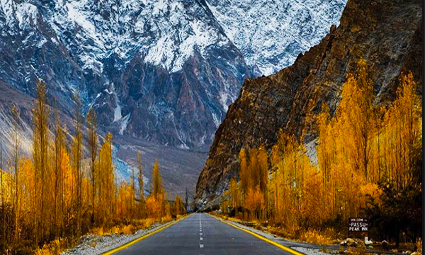

- Home
- Destination
- Rent a car
- Hotel
- Photography
- Blog
- Contact
17 Useful Travel Photography Tips For Improving Your Photos
Some people collect souvenirs when they travel, I prefer to collect beautiful images with my camera.
Travel photography is like a time machine, freezing memories from a journey that you can look back on and enjoy for years. Plus it can help others find new inspiration
.
Every travel destination has its own look, culture, history, people, feelings, landscapes, and stories.
Learning how to capture these subjects through photos helps convey the spirit of a place to others, giving them a glimpse of what it might be like to venture there.
.
I never went to school for photography. And yet here I am now, making my living as a professional travel blogger & photographer who regularly licenses images to tourism boards, brands, and occasionally glossy magazines.
I’ve slowly learned the techniques of travel photography over years of reading books, watching online tutorials, and regular practice to improve my craft. You can learn this way too — if you put in the effort!